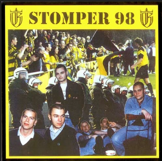
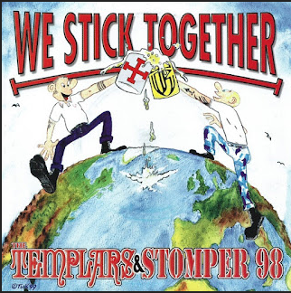
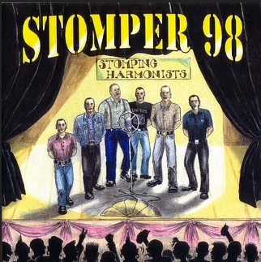

Stomper 98

Stomper 98 nació en enero de 1998 en Göttingen, Alemania. La banda ha tenido una formación cambiante pero siempre ha mantenido su estilo clásico del Oi! combinando el sonido de la vieja escuela con toques modernos. A lo largo de los años, Stomper 98 ha tocado con algunas de las bandas más grandes de la escena, como Oxymoron, Templars, y más. Han lanzado varios discos y han seguido siendo una parte fundamental del movimiento Oi! en Alemania y en el mundo.
Discografía
1999 - Stomper 98 EP

1- Stomper 98
2- Ochsensong
3- Pickel Auf Der Flöte
4- Stadiongeflüster
1999 - The Templars & Stomper 98 - We Stick Together 7''

1- The Templars - F.T.W.
2- The Templars - N.Y.P.D.
3- Stomper 98 - Skinhead
4- Stomper 98 - Päderast
2000 - Stomping Harmonists

1- Stompertheme
2- Du Bist Wie Wir
3- Ich Brenne
4- C.B.C.
5- Dich Zu Vergessen
6- Skins Are Back
7- Happy Hippie Hit
8- Alle Haben Bier Gern
2003 - Jetzt Erst Recht
1- Geweint Und Gelacht
2- Arroganz
3- Jetzt Erst Recht
4- Furcht Besiegt Die Hoffnung
5- Willkommen In Der Hoelle
6- Madchen
7- Ich Schlag Zurück
8- Ein Neuer Tag
9- Lebenslauf
10- Um Die Welt
11- Erheb Nochmal Dein Glas